Argent et achats 15
- BankFeeLensCompare le coût annuel d'offres bancaires selon votre usage et les tarifs que vous saisissez.Finance
 BillCalendarSuit factures et abonnements récurrents : coût mensuel réel, calendrier, export agenda.Finance
BillCalendarSuit factures et abonnements récurrents : coût mensuel réel, calendrier, export agenda.Finance- CashEnvelopeRépartit le budget du mois en enveloppes et suit soldes, reports et dépassements.Finance
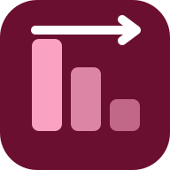
DebtStrategyCompare l’avalanche et la boule de neige pour rembourser plusieurs dettes avec un budget mensuel.Finance- ExpenseClassifierClasse un relevé bancaire CSV avec vos règles et totalise par catégorie et par mois.Finance
- InvoiceCanvasPrépare des devis et projets de factures imprimables, non certifiés.Finance
- LoanSimSimule l'amortissement d'un prêt et l'effet d'un remboursement anticipé.Finance
- MoneyUntilCalcule le budget disponible par jour jusqu’à la prochaine paie.Finance
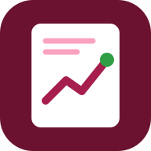
PriceJournalNote les prix relevés par produit et magasin, suit leur évolution et le meilleur prix observé.Achats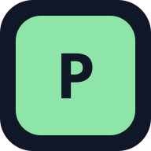
PriceLensCompare le prix au kilo, au litre ou à la pièce de produits vendus en formats différents.Achats- ReceiptRescueClasse les tickets, les retours et les dates de garantie.Maison et achats
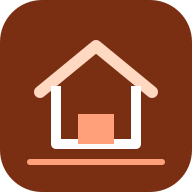
RentBuyCompareCompare les coûts nets cumulés de la location et de l'achat selon vos hypothèses, point d'équilibre.Immobilier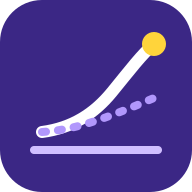
SavingsProjectionProjette une épargne avec versements réguliers et taux hypothétiques saisis, scénarios comparés.Finance- SizeMatchConvertit distances, masses, volumes et températures, même hors ligne.Achats
- SplitFairRépartit les dépenses communes entre plusieurs personnes.Finance
Maison et quotidien 21
- ChoreWheelRépartit et suit les tâches ménagères.Maison
- FindMyStuffMémorise où se trouvent les objets et à qui ils sont prêtés.Organisation
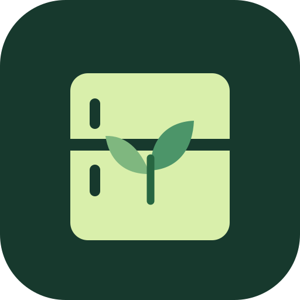
FridgeFirstSuit le stock alimentaire, les échéances et les idées de recettes.Alimentation- GardenPlannerDessine le potager en grille, date semis et récoltes, et signale les rotations à revoir.Maison
- GiftNestOrganise idées de cadeaux, budgets par personne et compte à rebours des occasions.Organisation
- HabitStepsSuit des habitudes quotidiennes ou hebdomadaires : pointage, séries et régularité.Bien-être
- HomeEnergyLogSuit les relevés d’électricité, de gaz et d’eau : consommation par jour, par mois et coût estimé.Maison
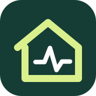
HomePulsePlanifie les entretiens du logement et leurs coûts.Maison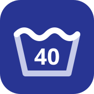
LaundryDecoderExplique les symboles d’entretien d’une étiquette de vêtement et résume les consignes.Maison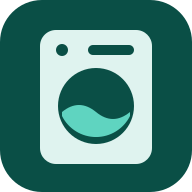
LaundryLoadRegroupe le linge à laver en charges compatibles selon la couleur, la température et la capacité.Maison- MealCalendarPlanifie les menus de la semaine et additionne la liste de courses à cocher.Alimentation
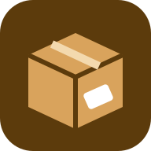
MoveBoxInventorie les cartons d’un déménagement, retrouve un objet et imprime les étiquettes.Maison- NoiseDiaryTient un journal daté des nuisances sonores observées, avec statistiques, export CSV et rapport imprimable.Maison
- PaintEstimatorCalcule la surface à peindre, les litres et la combinaison de pots la moins chère.Maison
- PetCareLogTient le carnet de soins des animaux : rappels, rendez-vous, courbe de poids et dépenses.Vie quotidienne
- PlantPulseSuit l’arrosage, l’engrais et le rempotage des plantes selon vos fréquences, avec retards et agenda.Maison
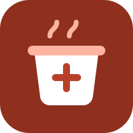
RecipeScalerRecalcule une recette selon le nombre de portions, avec conversions et arrondis lisibles.Alimentation- RepairLedgerSuit les réparations de vos objets, leur coût cumulé face au prix d’achat et la fin des garanties.Maison
- RoomSketchDessine un plan 2D de pièce et bloque les chevauchements de meubles.Maison
- RoundPlanConstruit et chronomètre des entraînements fractionnés.Sport
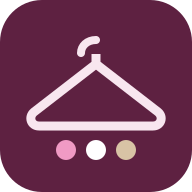
WardrobeCapsuleCompte les tenues possibles d’une garde-robe capsule, propose des tenues et signale les manques.Vie quotidienne
Déplacements 15
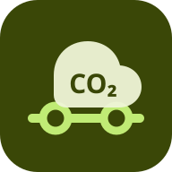
CommuteCarbonEstime les émissions de trajets avec des facteurs configurables et compare des scénarios.Mobilité- FlightTimeMathCalcule durées de vol et d'escale en heures locales et fuseaux, arrivée J+1 et correspondances trop courtes.Voyage
- FuelMathEstime le coût d’un trajet à partir du carburant et de la distance.Mobilité
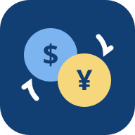
FXBudgetConvertit les dépenses de voyage avec vos propres taux datés et montre le reste par catégorie et par jour.Voyage- JetLagPlannerVisualise des horaires de sommeil décalés entre fuseaux, sans conseil médical.Voyage
- MileageBookEnregistre les trajets et les kilomètres parcourus.Mobilité
- ParkingSpotMemoryEnregistre niveau, zone et repères où un véhicule est garé, avec minuterie de stationnement et historique.Mobilité
- ParkWiseCompare des coûts de stationnement selon les tarifs saisis.Mobilité
- RoadTripCostCalcule le coût d'un voyage routier par étape et par personne : carburant, péages, hébergement, repas.Voyage
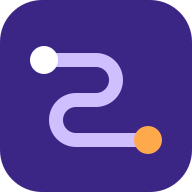
TransitCompareClasse vos itinéraires selon le temps, le prix et les correspondances, avec votre valeur du temps.Mobilité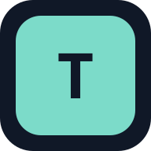
TravelDayOrganise les étapes et les dépenses d’un voyage.Voyage- TravelPackingWeightPèse les bagages objet par objet, signale les dépassements et propose quoi déplacer.Voyage
- TripDocumentListListe les papiers de chaque voyageur et vérifie leurs échéances face aux dates du voyage et à votre marge.Voyage
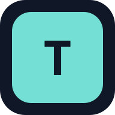
TripPackPrépare et coche des listes de bagages pour voyager.Voyage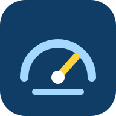
VehicleServiceLogCarnet d'entretien : interventions, échéances en km ou en mois, kilométrage estimé et rappels.Mobilité
Travail et organisation 19
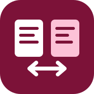
CareerMatchCompare les mots d’un CV et d’une offre d’emploi : termes présents, absents et couverture, hors ligne.Travail- DecisionDeckCompare plusieurs options à partir de critères pondérés.Décision
- EventCountGère les invités, les réponses et le budget d’un événement.Événements
- FocusForgeEnregistre et totalise les minutes de travail par projet.Productivité
- FreelanceRateEstime un tarif journalier ou horaire cible à partir de vos charges, revenu visé et taux saisis.Travail
- GoalLadderDécoupe un objectif en étapes mesurables.Productivité
- KanbanPocketTableaux Kanban avec limite WIP, étiquettes, échéances, filtres et déplacement au clavier ou au doigt.Productivité
- MeetingMinutesOrdre du jour minuté, décisions et actions suivies d'une réunion à l'autre, compte rendu .md et .ics.Productivité
 NoteGardenNotes locales reliées par [[liens]] : rétroliens, étiquettes, recherche plein texte et export Markdown.Productivité
NoteGardenNotes locales reliées par [[liens]] : rétroliens, étiquettes, recherche plein texte et export Markdown.Productivité- PollBoxVote anonyme en faisant passer un appareil, résultats révélés à la clôture et export CSV.Événements
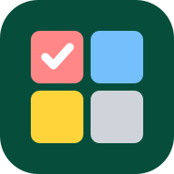
PriorityMatrixMatrice urgence × importance : urgence calculée selon votre seuil, classement au glisser ou au clavier.Productivité SalaryScenarioCompare des nets théoriques à partir d'un brut, de primes et de taux de retenue saisis, sans barème.Travail
SalaryScenarioCompare des nets théoriques à partir d'un brut, de primes et de taux de retenue saisis, sans barème.Travail- SeatArrangePlan de table ou de rangées avec contraintes, placement automatique, ajustement manuel et CSV.Événements
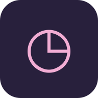
ShiftLedgerAdditionne horaires, pauses et rémunération théorique.Travail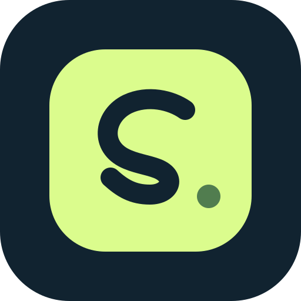
SnapActionCapture rapidement tâches et rappels datés.Productivité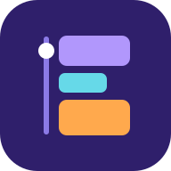
TimeBlocksJournée en blocs de travail : chevauchements, pauses, totaux par catégorie, modèles et export .ics.Productivité- TimelineBuilderFrises chronologiques à l'échelle : périodes, dates avant notre ère, pistes, export SVG et CSV.Productivité
 VolunteerRosterAffecte les bénévoles aux créneaux selon disponibilités et compétences, signale les trous et exporte en CSV.Événements
VolunteerRosterAffecte les bénévoles aux créneaux selon disponibilités et compétences, signale les trous et exporte en CSV.Événements- WorldMeetCompare les fuseaux horaires pour planifier des réunions.Productivité
Études et recherche 19
- CitationCraftOrganise des références et échange des fichiers BibTeX/RIS/JSON.Recherche
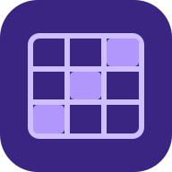
ClassRubricCrée des grilles critériées et calcule la note de chaque copie sur le barème choisi.Éducation- CoursePlannerDécoupe un cours en séances, contrôle le volume horaire et date les séances selon le calendrier.Éducation
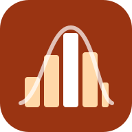
DescriptiveStatsCalcule moyenne, écarts-types, quartiles, asymétrie et histogramme d’une série collée ou importée.Données- GradePilotCalcule les moyennes pondérées et la note nécessaire à un objectif.Éducation
- GroupAllocatorConstitue des groupes d'étudiants selon vos règles (séparer, réunir, équilibrer), tirage reproductible.Éducation
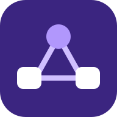
HypothesisGraphDessine le schéma des hypothèses entre variables (médiation, modération), signale les boucles, exporte SVG.Recherche- KeyboardCoachMesure la vitesse et la précision de frappe pendant un exercice chronométré.Éducation
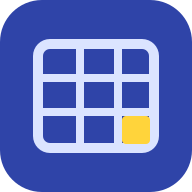
LiteratureMatrixOrganise une revue de littérature en matrice articles × colonnes, repère les cases vides, exporte en CSV.Recherche- LogicLabTables de vérité, tautologies, équivalence de deux expressions et formes normales FND/FNC.Éducation
- OralPresentationClockChronomètre de soutenances : ordre de passage, seuils d'alerte, plein écran, dépassements et CSV.Éducation
- PeerFeedbackFormÉvaluation entre pairs : grille, moyennes et écarts par étudiant, coefficient WebPA expliqué et CSV.Éducation
- QuizCraftCrée des mini-quiz et suit les questions maîtrisées.Éducation
- ReadTrailTient le journal des livres lus et des notes de lecture.Lecture
- ResearchQuestionLabStructure problème, lacune, questions et hypothèses de recherche avec une liste de contrôle.Recherche
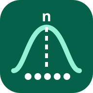
SampleSizeCalcCalcule la taille d'échantillon d'une enquête ou d'une comparaison de deux proportions, formules détaillées.Recherche- StudyRecallPlanifie les révisions de fiches par répétition espacée (boîtes de Leitner).Éducation
- SurveyComposerConçoit un questionnaire avec conditions d'affichage, repère ses défauts et exporte le dictionnaire des codes.Recherche
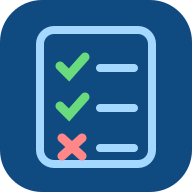
TeachingAttendanceFait l'appel par séance, calcule l'assiduité de chaque étudiant et signale ceux sous le seuil choisi.Éducation
Outils numériques 11
- ColorContrastMesure le contraste des couleurs selon WCAG.Design
- CSVClinicNettoie des CSV, corrige des formats et retire les doublons.Données
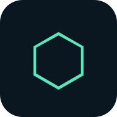
FileIntegrityCalcule une empreinte SHA-256 locale pour vérifier qu'un fichier n'a pas été modifié.Sécurité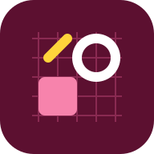
IconStudioPetites icônes SVG sur grille : formes, calques, annulation, contraste, export SVG propre ou PNG.Design- ImageShrinkRéduit les dimensions ou le poids des images localement.Fichiers
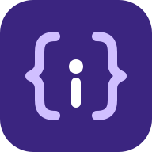
JSONInspectorValide du JSON (ligne et colonne de l'erreur), arbre repliable, chemins JSONPath et clés dupliquées.Développement- MarkdownDeskÉditeur Markdown local avec aperçu sûr, plusieurs documents et export .md ou .html.Texte
- QRForgeGénère des QR codes sans transmettre les données à un service.Fichiers
- ReadabilityLabMesure la longueur des phrases, repère mots longs et répétitions, avec la formule de lisibilité de chaque langue.Texte
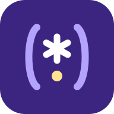
RegexWorkbenchTeste des expressions régulières : groupes, remplacement, explication et arrêt des expressions qui s'emballent.Développement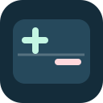
TextDiffCompare deux textes et repère les ajouts ou suppressions.Texte
Aucune appli ne correspond à cette recherche.